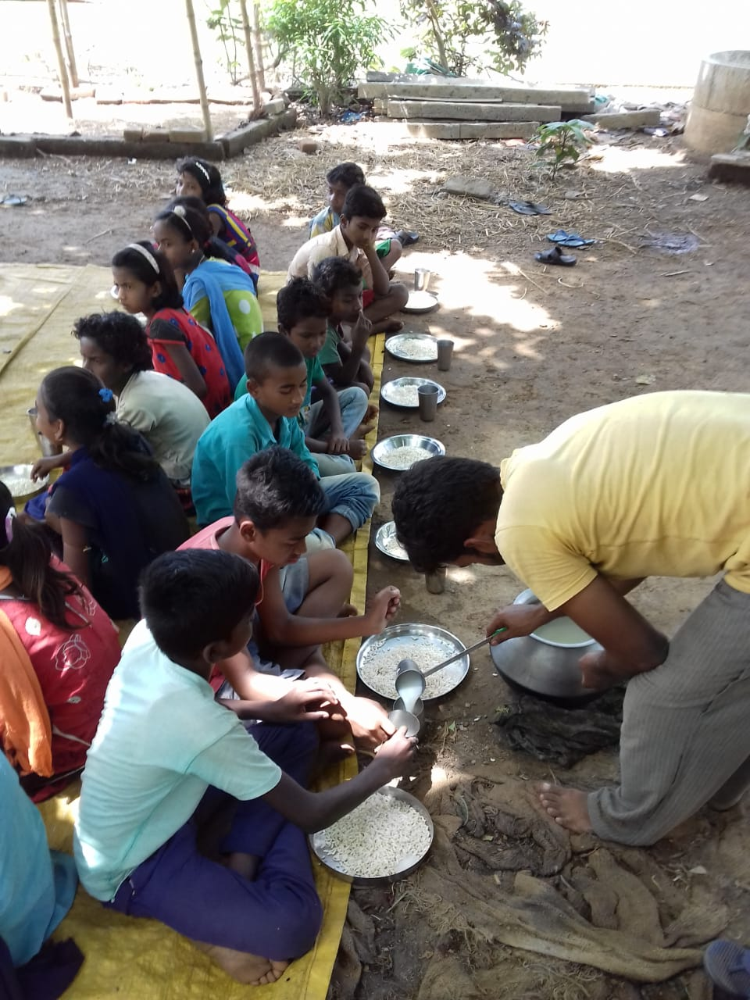

VAROSHA
Breakfast for 190 School Children

School children in Mallarpur Center are provided with: puffed rice, milk and sugar (4 days), bread, sweet and banana (1 day), egg and bread (1 day) each week. Children in Kolkata Centers are given: fruits (2 days), egg (2 days) and health drinks (1 day) per week.